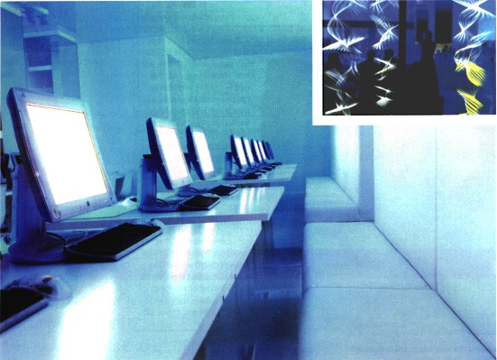

|
Sofa so good As swell as admiring artist Paul Friedlander's amazing light sculptures, visitors to Nutopia can park their posteriors on Ansel Thomas' highly original 'Sofa For Two'- a piece of furniture which, according to Nutopia's spokes person Roz Airatoon: "explores the interface between organic structures and new advances IT' material and structural technologies." The artist himself commented that: "the sofa is constructed using similar technology to that of a Formula 1 car."This month, Nutopia will also be exhibiting the work of digital artist Jason Bruges. Jason has constructed eight interactive panels, which breathe blue and white light and respond to ambient changes in the atmosphere, including human movement. Nutopia Is looking for digital art and installations to exhibit in its gallery. For more information, contact Toula Philippakou (Nutopia's operations Director and George's sister) on 10207 379 3730. Or feel free to ask for her in person at the lounge's reception area. |
computer arts march 2000
Nutopia
VISIT THE UK's HOTTEST NEW CYBERSPACE - IT'S SIMPLY NUTOPIAN...
Whether you live in London, or have the opportunity to visit on digitally creative
business, you should go to a unique new cyberspace: Nutopia. Set just a stones
throw from the hustle and bustle of Covent Garden's Piazza, Nutopia is a friendly
mix of interactive rnedia art space, chill-out zone and computer laboratory
- picture a set frorn Kubrick's 2001 (minus the lippy computer Hal) and you'll
get the idea.
From coffee to art
At the front of Nutopia are comfy sofas and an organic juice/coffee bar, from where you can feast your eyes on cutting-edge art which, even if it doesn't actually emanate from computer monitors, relies on computer power to drive it.

Currently on show is 'Dark Matter', a sculpture from Britain's leading light
artist, Paul Friedlander. Paul shines chrornastrobic light along the length
of three rapidly gyrating skipping ropes, which give rise to three oscillating
vertical columns of textured light. The form and colour of these columns are
continuously redefined by a hidden computer. Better still, you can interact
with 'Dark Matter' by using two high-frequency sound beams to alter the speed
of the rope's vibrations and the colour of light. Place some part of your body
through the beams and you cause disturbances that are fed back to the motor,
driving the rope into the chromastrobe to illuminate the sculpture.
Move on through Nutopia and you pass
the two huge aquariums which have been installed to de-ionise the air, helping
to create both a calm and stress-free environment.
Computer-controlled aquamarine lighting is carefully used throughout the space,
giving you the impression of living in some seductive, subtly changing, digital
artwork.
At the back is a 'Computer Zone', with rows of clinically white Starship Enterprise
benches, all laden with beautiful iMac low-radiation monitors. In a curious
hybrid of digital technology, these Macs are actually the front ends of PC-based
systems powered by Intel Pentium chips. Purists who believe that 'never the
twain shall meet' shouldn't be put off; these Mac-Intel hybrids function with
spooky smoothness and are remarkably user-friendly.
Ambitious plans
Nutopia is very much in its embryonic phase, but Managing Director Grant Mitchell and IT Director George Philippakos both believe that "The sky is the limit". So what, exactly, do these two have up their sleeves?
With the calm assurance of a new age prophet who knows he's on to a good thing, Mitchell envisages: "a worldwide network of Nutopias, an interactive on-line database for computer artists and people working in new media or the hot technology industries, and an exhibition demonstrating the latest in robot technology - that's just for startersl" ~
Visit Nutopia St 42 Shelton Street, Covent Garden London WC2H 9HZ. For more
details or a virtual tour check Out W www.nutopia.net